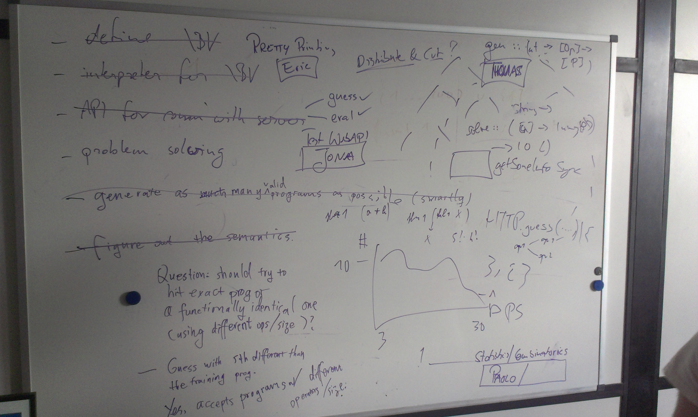

ICFP Programming Contest 2013
Over the last weekend I participated in the ICFP Programming Contest for the first time. It was a lot of fun.
Find the problem description here. I quote the prologue which gives a nice idea.
Game: I have a program A, and I want you to guess it.
Player: Can you tell me what is A(16), A(42) and A(128)?
Game: Sure, A(16) = 17, A(42) = 43, and A(128) = 129.
Player: Is the program B0, where B0(x) = x + 1?
Game: No dice, A(9) = 9, but B0(9) = 10.
Player: What is A(11), A(12) then?
Game: Since you ask so nicely: A(11) = 11, A(12) = 13.
Player: Is the program B1, where B1(x) = if ((x & 1) ^ 1) = 0 then x else x + 1
Game: That’s right! You score one point. I have a program A’, and want you to guess it.
Player: Argh!!!
Below you find some general conclusions and after that, for the patient reader, a report that I wrote mostly during the contest and edited slightly today. It is probably not interesting to anybody but myself.
Conclusions
It really was a lot of fun, I cannot emphasize this enough. If you have never participated, you should!
We used a central git repository on github were everybody had push access. Everybody had, of course, their local working repository. We did not use personal repositories on github and made pull requests from there. Tillmann used pull requests from main repo branches to alert people of what he did, but in the end, I don’t think we merged any. People used feature branches but there was no strict policy for master. Nevertheless it contained a working system most of the time.
We used Haskell for all the main stuff. My Haskell skills are rather limited, but it was really nice to work with. The type system gives a lot of confidence that merged code does not break anything. Thomas had an interesting encounter with the type system. He used read to get a command line parameter, which was originally an Int and pass it to some other function. Someone later changed the called function to expect [Int]. This implicitly changed read :: Int to read :: [Int] but of course this broke the command line interface, which would then require not $ program 5 but $ program [5].
I was not involved in the proxy server that was written in Ruby, but the people who were spend some time debugging it while the Haskell people made fun of them for getting type errors at runtime. I don’t know too much about Ruby but it apparently also fails somewhat at detecting undefined names, probably on purpose because of this method_missing stuff.
Process-wise I could imagine some improvements. In the end we had a couple of unmerged improvements like the data parallel execution of programs. This was not difficult to integrate, only nobody did it. We did not explicitly define interfaces between components, but this turned out to work fine. We had some duplicated effort, which is not necessarily bad, but at a couple of times nobody seemed to have any idea what most other people were doing. Maybe somebody could have slipped into a management role and try to keep an overview over what people are doing and who is familiar with/responsible for different parts of the code base.
Friday

First meeting at 10 am local time in the coffee room at the university. The initial discussion was not very orderly. But we managed to identify four subtask and split our team of 8 evenly to address:
- Network interface
- Interpreter for \BC
- Testing the interpreter
- Statistics about our problems
We decided on Haskell for our main programming language.
I was on the statistics team. The idea was to analyze our problem metadata. First some very basic numbers like the amount of problems and a size histogram, then any interesting properties, like large problems with few operators and whatever else we would think of. My team member did not know Haskell, nor were the both of us proficient in Julia or R. I would have liked Python, but we decided on Java to do the statistics stuff. It wasn’t very clear what we actually wanted to know and until lunch we did not get much more done than installing Eclipse, parsing the myproblems JSON document and counting the problems – 1420. After lunch, we set out to ask more complicated questions and it became clear that Java is totally the wrong language for this. I imported the data into an SQLLite database, which was nice for querying, but in the end we did not actually use it much. In the following days I wrote some Java code that basically loaded the problems and generated Haskell code that would represent the whole dataset and allow some simple queries for metadata. In retrospect, this statistics stuff we did was not very useful, but perhaps we just did not do enough of it to actually guide the generator development.
In the early evening we had a working interpreter and some networking code. Thomas moved on to write the first brute force program generator. It generated all programs of a given size using given operators. All in all there was some real progress, but still had not submitted a single solution and this was when lightning division had about 6 hours left.
This was a theme that continued over the whole weekend. We had everything working to submit correct solutions (for a subset of problems) but were to afraid to actually run it on real problems.
We discussed about simplified programs, that in the other direction would be optimizations like constant folding. This resulted in the decision to not generate all programs of a given size but avoid useless expressions like (and subexpression 0). In exchange we need to generate also all smaller programs to a problem of given size, to not miss solutions. Consider a problem of size 5:
(lambda (input) (and input 0))Because we would not generate the useless and, we need to generate a problem of size 3 instead:
(lambda (input) 0)At about 11 pm we actually had a working main loop that could fetch a training problem, guess a solution and submit it. It worked! I went home shortly after midnight, when we just had started to solve some real problems.
Saturday
I arrived in the late morning, and it took some time to get up to speed again. After I had left the day before we managed to make 100 points!
Our approach was still basically brute force plus some limited cleverness. We avoid using operators that are not in the problem meta data and do not generate some equivalent programs. For example we do not generate both (lambda (input) (xor 1 input)) and (lambda (input) (xor input 1)).
The first half of Saturday, Thomas optimized the generator. In retrospect much of this time was wasted.
I worked with Paolo on making our interpreter data parallel. We execute every program on at least 256 inputs and compare with the outputs their program gives (from an eval request). Before, the program was just executed for every input. The data parallel idea is to execute the program for a whole input vector at once, thus saving interpretation overhead. Basically the idea was to change eval from eval :: Word64 -> Program -> Word64 to eval :: [Word64] -> Program -> [Word64]. We changed the eval function to be in Applicative and ran the whole thing in the identity monad with the idea of switching this to Control.Applicative.ZipList and getting the data parallel execution for free. The test run using the identity monad seemed to work except for the fold case which we left out, because we did not find an applicative foldr.
Meanwhile, Tillmann worked on the same problem, but wrote it in direct style and using vectors. This is probably what I would have done on my own, because I have no experience with the applicative stuff. Anyway, this was a somewhat unfortunate duplication of effort, but not too bad for me personally, since I actually learned something. I think we should have gone with the direct style version, because it was very much more readable and actually covered all cases. But somehow we forgot about this whole direction of work and the final interpreter was not data parallel at all.
Later that day, I was thinking whether a stack representation of programs, think Forth, would be more convenient to generate and/or evaluate. I concluded that it propably does not get us anything, because it does not make it easier to generate reasonable programs and AST size is not the problem. We don’t seem to actually know what the problem with our program generator is, currently. It has been improved by a lot, but still there seems to be a space leak.
Tillmann and Felix use Windows, where some test cases of the interpreter fail. It’s only the not operation, which is implemented using complement on Word64. It works fine for everybody else, on various Haskell versions on various Linuxes and OS Xs. Both Windows machines seems to drop the first two bytes, but not in GHCi and maybe only when printing using showHex. We tried to isolate the problem but ultimately gave up and decided to just not use these machines for real guessing.
I had a look at the bonus problems and they seemed to follow a pattern. There is a toplevel if0 and nothing more interesting, no if0, no fold. We figured our existing brute force generator might be fast enough to solve the bonus problems with some special casing. We implemented the specializied generator, that basicall generates the toplevel if0 and then calls the brute force generator (which already only uses operators from a given list, so we pass the meta data operator list with neither if0 removed). Currently we can solve problems of size 19, I think. Because if0 and fold are the most expensive operators, we figured we might be able to solve the bonus problems which range from, I think, 19 to 25. No dice. It got up to using 10 GiB of memory, at which point we killed the process. Later we found out that there actually are bonus problems that contain more than one if0.
In the evening, people are working on three new generators which are all supposed to be smarter. Also, we started to design and implement a proxy for the game server that tries to partition the problem space and distribute the solving process across multiple machines.
When I left we just got one of the new, smarter generators working. It takes the input output list and only generates programs that satisfy these constraint. As far as I understand, it uses some sort of tri-state logic stuff. One of the other new generators was also based on tri-state logic but I have been told that there were some differences. When I left this new generator had just solved a size 25 problem in seconds. It was looking very good :-)
Sunday
People worked till early in the morning. Apparently the success on the size 25 problem was accidental, in the sense that the solution was much smaller, something like 12. This is fine, but we cannot expect to have this happen for all larger programs.
The other two smarter generators were abandoned.
We did some more work on the size 42 bonus problems. Jona had downloaded lots of them, renamed the input varible and removed duplicates. He came up with a list of 90 solutions. We figured that maybe all bonus problems were in this list. We weren’t certain so we did another run of downloading and removing duplicates and came up with 96 solutions. So the list did not contain all solutions but apparently a large subset. Later that day I nevertheless wrote a generator that tries programs from this fixed list and shortly before the contest ended we actually ran it on some of the “size 42” bonus problems.
I pretty printed a couple hundred bonus problem solutions to maybe see a common structure, but except for the toplevel if0, which we already knew, I did not come up with much.
Over Sunday I lost my overview about what people were doing. There was some work on the new generator which was greatly improved as far as I understand. Others were working heavily on the proxy server (written in Ruby) and the respective client code for the distribution stuff.
In the end we used both the old and new generators, as well as the hard coded list of bonus problem solutions for a time, on two clusters of 16 and 3 machines. It is my understanding that we were actually limited mostly by requests in the end. This is rather unfortunate, because we actually only really started submitting solutions about 4-6 hours before the contest ended. We could have started on the easier/smaller problems way before then but somehow it just did not happen.